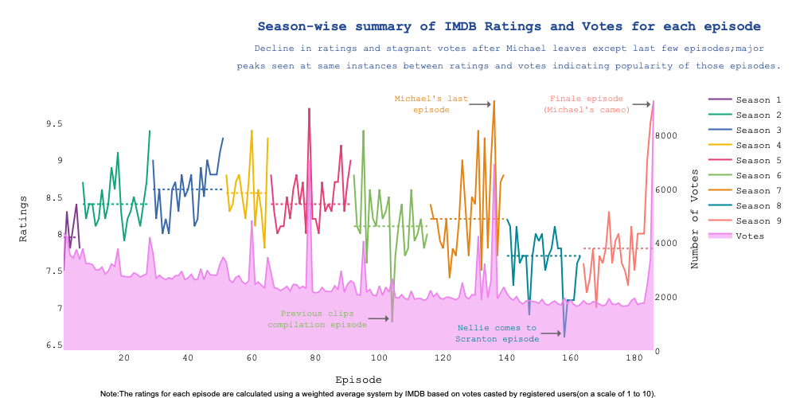
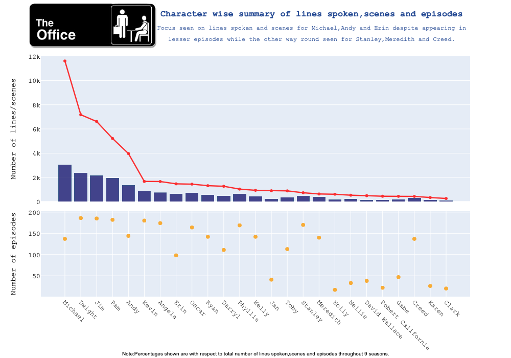

Office Best Character Debate
Who's the best Office Character?
The US version of The Office is a staple of American culture whether you enjoyed the show or not. According to the Nielsen SVOD Content Ratings service, The Office was the most streamed show in the United States in 2020 with over ~57 billion minutes watched.
The next nearest show was Grey’s Anatomy with ~39 billion minutes equating to ~ ⅔ of the streams that The Office received. For a show of this magnitude, arguments are expected, however, none more pressing than who is the best character on The Office. Instant favorites come to mind like Jim, Dwight, Michael, Pam, Creed, and others, however, that can only be one.
For this research question I referenced Swarnita Venkatraman’s GitHub page and her Plotly presentation, images are also sourced from here as well. She analyzed the popularity of each character on The Office based on the number of episodes, (spoken) lines, episode ratings (grouping by character’s appearance/disappearance on Ep. and comparative rating), and popular vote per episode from IMDB. She initially discovered that Michael may be the most influential character on the Office because there is a definitive rating change (each season 1-9 median) once he leaves The Office fig 1.1. Furthermore, the show’s median per season had a minimum rating of 7.95, whereas, in seasons 8 and 9 (after Michael left) they recorded their show’s lowest 7.7 and 7.8 ratings. Lastly, the two episodes with the highest ratings, both recorded a 9.8, were the episode where Michael left the office and the last episode, which Michael reapers on after a two-season plus absence.
- Fig 1.1 | Click for interactive experience
Another pivotal theme for ‘best character’ is usually the amount in which they contribute to the show in total lines or scenes appeared. For this instance, again, Michael leads the pack speaking 11.612K lines attributing to 20% of total spoken lines on the show; and was apart of 3303 scenes attributing to 34.3% of scenes on the show fig. 1.2. However, this proves Michael to be the main character of the show rather than him truly being the objectively best character. Therefore, Venkatraman also cross-referenced these statistics but for inner show relationships to exclude supporting characters or group dynamics influencing the show more than individual characters.
- Fig 1.2 | Click for interactive experience
The two relationships (both characters appearing in a scene together) that were the most consistent were Jim and Pam 393 scenes as well as Michael and Dwight 310 scenes. However, Michael and Dwight dominated based on the number of lines exchanged, Dwight speaking to Michael 1735 times whereas Pam spoke to Jim 1672 times. Again, this is still not conclusive, however, we are getting closer to the ‘best character’. Lastly, Venkatraman compares the ratings and characters with maximum lines per episode fig 1.3. Here, again Michael takes the cake.
Michael’s good rating range and high median rating confirm his role as the central character to retain continuity in episodes while after his departure season 8 and 9’s erratic plotlines and rating dip can be linked-to Andy and Dwight’s high lines and low rating range fig 1.4
. - Swarnita Venkatraman
- Fig 1.3 | Click for interactive experience
- Fig 1.4 | Click for interactive experience
Ultimately, Michael is not only the most congruent character but he is also the objectively ‘best character’. He consistently records and is substantiates responsibility for the most highly rated Office episodes. Moreover, there were clear indications that once he left the show fan attention started declining until the show’s demise. Michael is also the best character on The Office because he is extremely polarizing, master of cringe moments, and brings a juvenile parental figure to the show. He truly is the Worlds Greatest Boss.